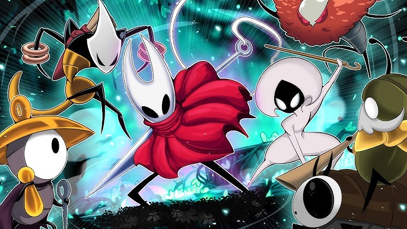
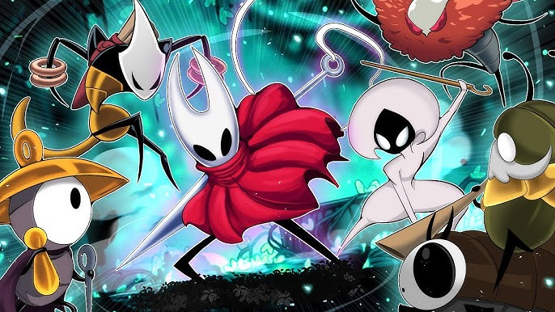

HOLLOW KNIGHT SILKSONG
Hollow Knight: Silksong é o próximo capítulo da jornada iniciada no universo sombrio e misterioso de Hollow Knight. Desenvolvido pela Team Cherry, o jogo coloca o jogador na pele de Hornet, a princesa protetora de Hallownest, agora prisioneira e forçada a lutar por sua liberdade em um novo reino tomado pela decadência e pelo canto da seda.
Diferente de seu antecessor, Silksong exala agilidade e leveza. Hornet não é uma sombra que rasteja pelas ruínas — ela se move com precisão e graça, enfrentando inimigos, armadilhas e abismos. O novo mundo é vertical, repleto de torres, templos e cidades suspensas, vibrando com a mesma melancolia e beleza do primeiro jogo.
O novo cenário, conhecido como Pharloom, é um reino onde música e fé regem a vida e a ruína. Tons dourados e instrumentos suaves criam uma atmosfera que é ao mesmo tempo sagrada e ameaçadora. O combate é mais técnico e dinâmico, exigindo reflexos e estratégia, enquanto o sistema de artesanato e progressão adiciona profundidade à jornada.
No coração de Silksong há uma busca por redenção — não só para Hornet, mas para todo um mundo que tenta se reconstruir sobre os fios do passado. Um espetáculo de beleza e sofrimento que promete marcar os jogadores assim como o original.